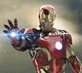
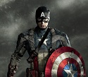

Anthony Edward "Tony" Stark
Tony Stark is played by Robert Downey Jr. Tony Stark is a genius inventor, hero, and billionaire, and the CEO of Stark Industries. Stark's company used to be weapons manufacturer for the U.S. military, until he decided to redirect his technical knowledge into the creation of powered exoskeleton suits of armor. Tony's armor is extremely powerful. He uses his armor to protect the world from evil.
Captain Steven Grant "Steve" Rogers
Captain Steve Rogers is a soldier from World War II. He joined the military because he believed that he must protect the freedom of the people of the world from those who wish to take it. In the military he was a part of the Super Soldier project where he received his super powers through various experiments. During one his war missions, Captain Rogers fell into the Artic and stayed in ice for sixty-six years and suspended animation. Rogers was found by S.H.I.E.L.D. in the early 21st century and joined the Avengers to continue his fight for freedom.
Thor

Thor Odinson, is the Asgardian god of thunder. Similarly to his friends, Thor believes that it is his job to protect all of the realms in the universe from harm. In the MCU films, Thor uses his godly powers to protect Earth and the human kind from the threats from other realms as well as other planets. Thor's father, Odin, granted him with one the most powerful weapons in the universe, Mjolnir. He is able to use it only as long as he is using it with good intentions. Thor joined the Avengers to help protect the world and those who live in it.